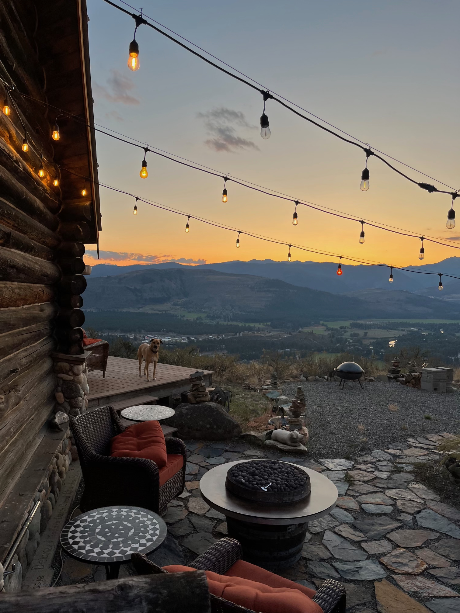
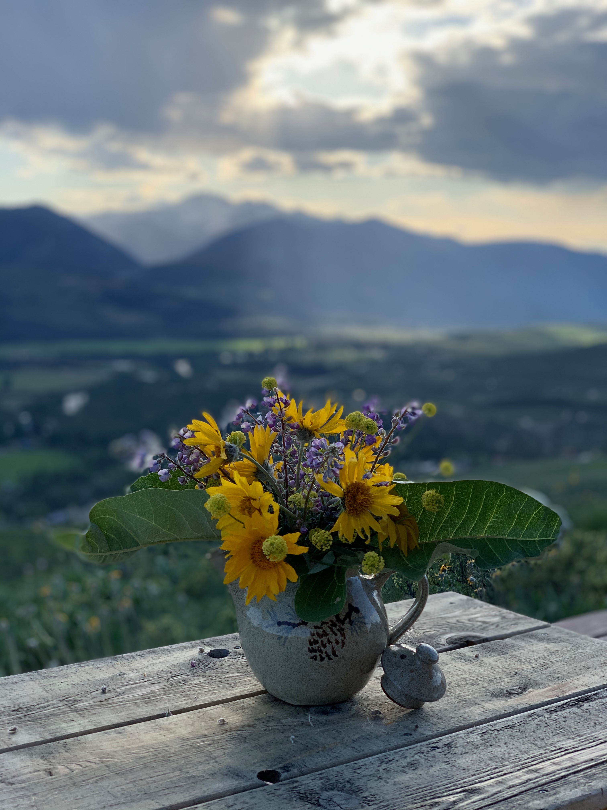
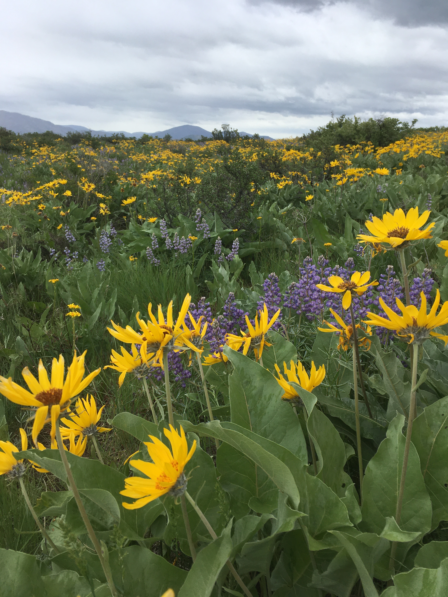
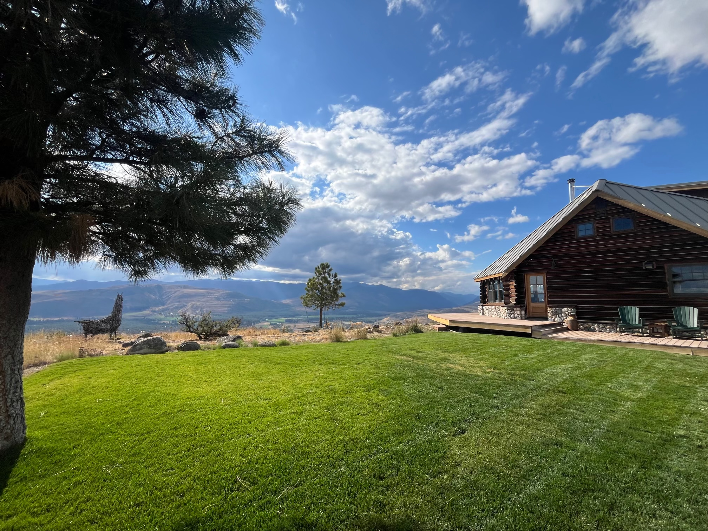

What to Expect
Our venue is the private home and family cabin of Kari & Galen Page (Kate’s best friend from Kirkland, Maddie’s parents) located on top of Studhorse Mountain near Winthrop, WA overlooking the beautiful Northern Cascades and Methow Valley. The second time they met (and long before they started dating!) Kate told Roger that she had always wanted to get married there, surrounded by mountains and wildflowers. Thanks to the generosity of the Page's, we are able to make that dream our reality!




We are so excited to get to share a place that we both deeply love with all of our favorite people. We hope that this weekend is a bit like Kate and Roger, filled with laughter, good food, relaxation, and lots of time spent outdoors. We’ll be staying up at the Cabin all weekend, and while there isn’t housing for everyone up there, we highly encourage anyone who wants to camp up there with us! For those staying elsewhere, we hope you’ll come relax at the cabin as much as possible to soak it in. We’ll have coffee, food (breakfast, lunch, and plenty of snacks), kegs of local beer, family-friendly games, and plenty of time around the fire (pending fire restrictions!). Come early, stay late, and we hope you’ll join us in soaking up all the magic this place has to offer!
A bit more about the Cabin:
The Cabin has long been a gathering place for family and friends. Built in the late 1970’s by Maddie’s family (insert picture of Maddie and her family), it has been the site of countless family gatherings, holiday celebrations, and weddings over the years. Kate was lucky enough to get to spend time at the Cabin with Maddie and her family as she grew up, and it immediately became her favorite place in the whole world (even after she learned that they’d previously found black widows in the outhouse!) Roger’s first time visiting the Cabin came in September 2023, only two weeks into dating Kate. He also quickly understood the magic of this place, and is so excited to get to come back for his